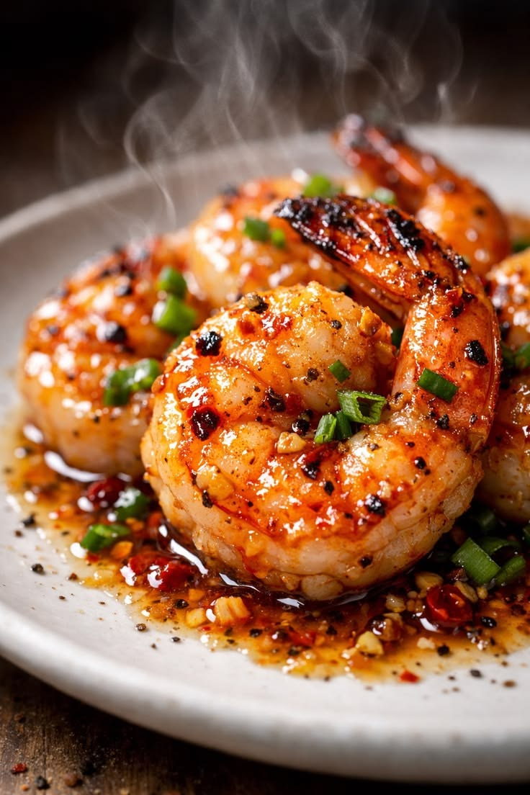

About This Recipe
Buttered shrimp is a flavorful seafood dish made with fresh shrimp, butter, garlic, and seasonings. It is easy to prepare and perfect to serve with warm rice.
Recipe Information
| Preparation Time | 15 minutes |
|---|---|
| Cooking Time | 15 minutes |
| Servings | 4 people |
Ingredients
- 500 grams fresh shrimp
- 3 tablespoons butter
- 5 cloves garlic, minced
- 1 tablespoon cooking oil
- 1 tablespoon lemon juice
- 1 teaspoon paprika
- Salt and pepper to taste
- Chopped parsley for garnish
Instructions
- Clean and wash the shrimp thoroughly.
- Season the shrimp with salt, pepper, and paprika.
- Heat the cooking oil and butter in a pan.
- Add the minced garlic and cook until fragrant.
- Add the shrimp and cook for about 3–5 minutes until pink and opaque.
- Add the lemon juice and mix well.
- Garnish with chopped parsley.
- Serve warm with rice.
Watch and Learn
Place your own recipe tutorial video in the images folder.